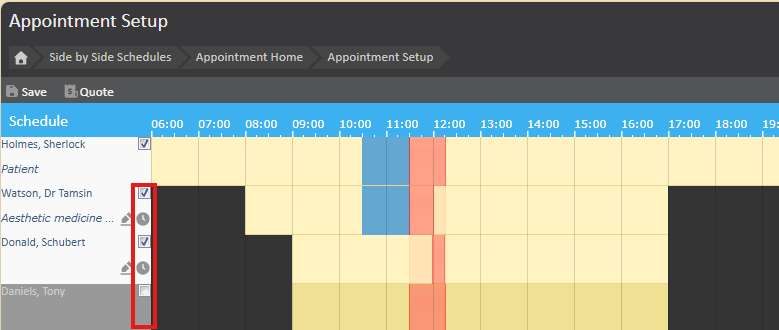
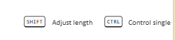
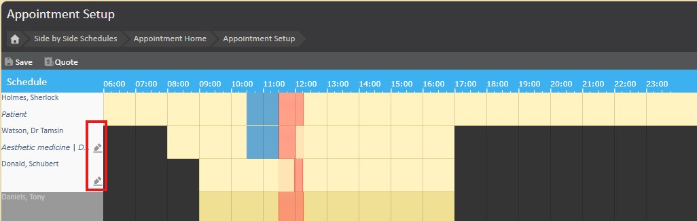
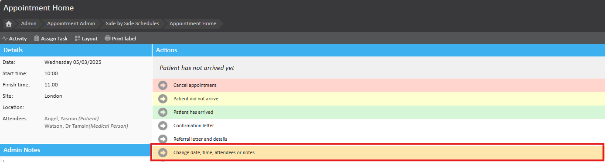
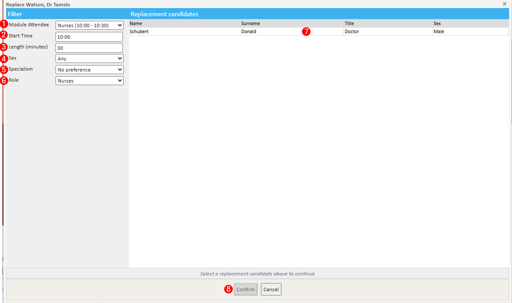
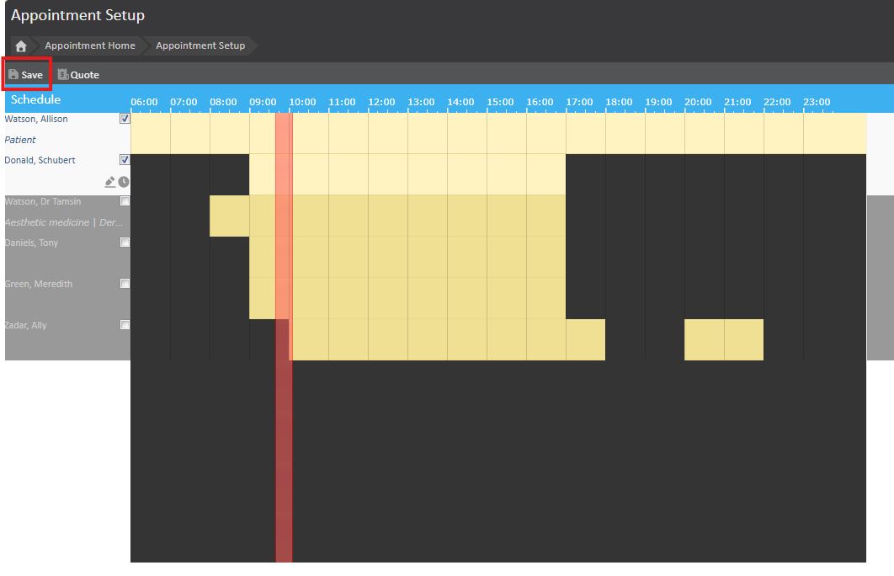

When rescheduling an appointment with a different attendee, multiple criteria must be considered. The Attendee Replacement feature simplifies this process by automatically filtering and displaying only eligible clinicians who have scheduled availability and meet the necessary booking criteria. This ensures that only clinicians qualified to perform the appointment or its specific parts can be selected as replacements. This feature is not only available when initially booking an appointment, but is also available when rescheduling or updating an existing appointment.
This article aims to explain the Attendee Replacement feature and how to use it.
If you would like to enable this feature, please speak to your account manager or raise a ticket with support to enable this.
The Attendee Replacement feature streamlines the process of rescheduling appointments by automatically considering booking criteria. It ensures that only clinicians who meet the requirements and have availability can be selected as replacements. This reduces manual effort and minimises scheduling errors.
In Admin> Configuration > Bookings, manual override of attendee definitions is enabled by default. This allows users to view and interact with the changing of attendees on the Appointment Confirmation and Setup page:


If you do not wish for users to be able to override these settings, disable this option and users will only be able to use the Attendee Replacement feature, without being able to override the above settings.
Turning off the override option is chamber-wide setting, which will affect all users including system admin.

Find the appointment you need to reschedule and open the Appointment Home page and click "Change Date, Time, Attendees or Notes".

This will take you to the Appointment Setup Page, click on the pencil next to the attendee you wish to replace.
The Attendee Replacement Dialogue window will appear. This window displays a list of available replacement candidates that meet the criteria in which the appointment was booked.

Once you have found your replacement, click confirm to confirm your choice and to be taken to the Appointment Set up Page.
Click Save to save any changes to the appointment and be taken back to the Appointment Home page.
